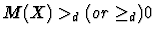
_d (or \geq_d) 0$">''
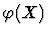
by using Sylvester's theorem.
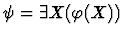
.
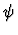
.QE outputs true or false. In the case of true QE returns one feasible solution. false means there are no feasible solutions.
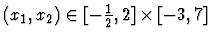
? [9]'' where
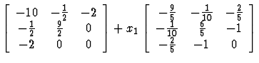
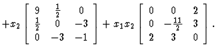
This problem is equivalent to the following QE problem:
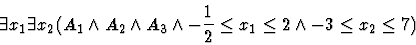
A1 = -45x1+9x2+50 > 0 ,
A2 = (-4950x2-25)x12+(990x22+6590x2+4100)x1-217x22
-2020x2-4525 > 0,
A3 = (-11000x23+37500x22-102750x2+40375)x13+
(-700x23
-15850x22+141250x2-27500)x12+ (3680x23+12935x22
-71900x2-19625)x1-764x23-3280x22+7000x2+9000 > 0.
After performing QE for this, we
have ``true''.
In the case of
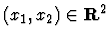
, after performing QE for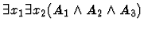
we also have true.
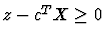
.
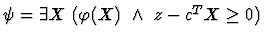
.
We consider some examples (which are modified one taken from [20]), and apply the above mentioned method to them in order to demonstrate the potential of QE approach to SDP problems.
Non-Parametric: Minimize x1+x2 subject to
The semidefinite constraint (8) is reduced to a Boolean system of inequalities constraints by using Sylvester's criterion;
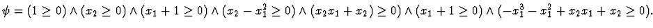
Assign new slack variable z to objective function x1+x2 and let
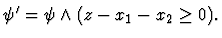
Then the problem is formulated as a first-order formula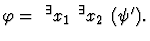
After QE we have an equivalent qf formula describing the range of objective function;Parametric(1): Minimize ax1+x2 subject to (8) with a parameter a.
Let
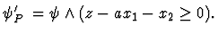
The problem is formulated as
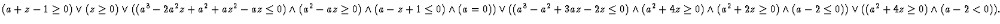
If we substitute a parameter a with 1 and simplify the result,
we have same result as
(9).
Restricted region:
Minimize x1+x2 subject to (8)
in restricted domains D1,D2 respectively,
where
(i)
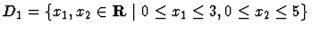
and (ii)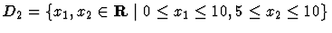
.
(i) In this case the problem is formulated as
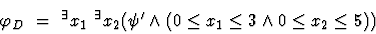
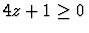
.
(ii) In this case the problem is formulated as
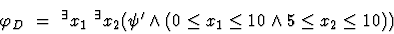
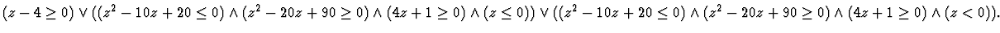
Parametric(2): Minimize x1+x2 subject to
The semidefinite constraint (10) is reduced to
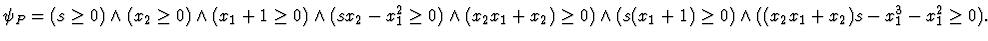
Let
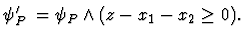
Then the problem is formulated as a first-order formula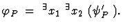
After QE we obtain
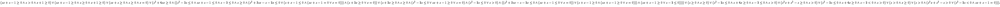
0 \land z + 1 \geq 0) \lor (sz + s - 1 \geq 0 \la... ...(s > 0 \land (s^2 z + s^2 - s > 0 \lor (s^2 - 2s < 0 \land sz + s - 1 = 0))). $">
If we substitute the parameter s with 1
and simplify the result, we have same result as
(9).
Parameter uncertainty:
Minimize x1+x2 subject to (10)
within the regions of a parameter s (i)
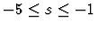
, (ii)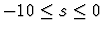
, respectively.
For (i),(ii), the problem is formulated as a first-order formula;
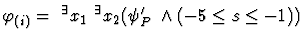
,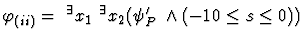
, respectively. After QE we obtain ``false'' for (i) and for (ii)
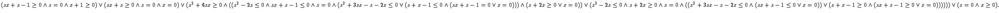